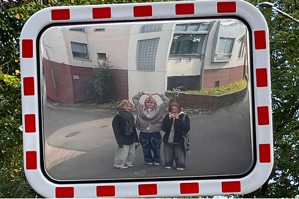
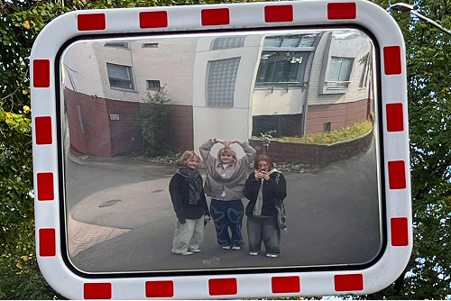
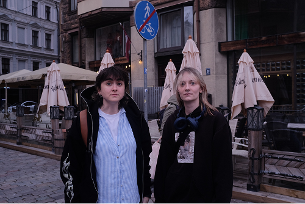
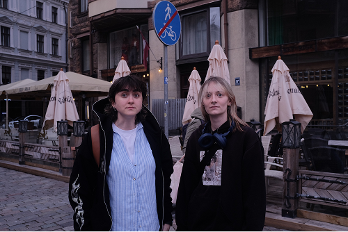

-
I'm outgoing and not afraid to strike up a conversation with new people. Building connections and learning from others is something I genuinely enjoy. My curiosity and drive to learn new things keep me constantly seeking out new challenges and opportunities to grow both personally and professionally.
Nice to meet you!
-

Nature Lover: I'm more of a mountain person than a beach person. I love trying different sports, and bouldering is my go-to hobby. I’m always up for an adventure.
-

Photography: I occasionally take pictures, capturing moments and scenes that inspire me. It’s a great way for me to combine my love for exploration with creativity.
My interests
-

Team Player: Coming from a big family, I've learned the importance of teamwork and collaboration. I value constructive criticism and believe it’s essential for growth.
-

Independent Worker: While I enjoy being part of a team, when it comes to working on different parts of a projects, I prefer my own space to focus and deliver my best work.
Professional Traits
Some pictures of me and the people I love:
 

 
